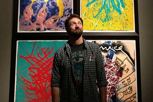

About Me

Hello, thanks for visiting my site! I am a tech professional located in Seattle Washington, with an extensive background in Design, IT, Audio Visual services, and small enterprise environments. I received my BA from Valparaiso University in graphic design, and spent 11 years in Chicago gaining experience in several aspects of commercial business.
I’ve worked extensively with sales teams, developing resources and best practices while managing CRM systems, SQL database query, and calculating innovative metrics to drive sales department success.
While working for a rapidly growing Audio Visual and Technology rental agency I pivoted to meet the needs of a nimble and fast paced environment, taking on roles in inventory management, vendor relations, marketing, and IT.
Here in Seattle I am the co-founder of a unique walking tour experience called the Overlooked Art Tour, and play a role in Storm Print City, an ongoing print-making venture that creates art and provides programming for youth and adult groups to get engaged and make art from found objects in urban spaces.
I am currently the Lead Media Technician at the University of Washington’s Medical Research campus in South Lake Union, overseeing in-house meeting technology and video conferencing systems for a wide range of student, faculty, and board member stakeholders.
In my spare time I provide print and digital freelance graphic design services for institutions and individuals, and learn or write new songs to play on my guitar. And for what its worth, I’m an Aquarius.